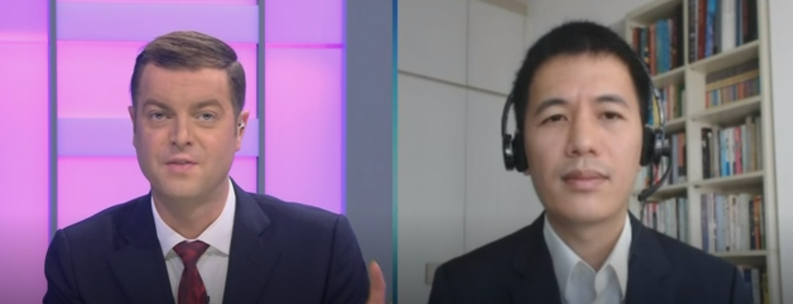

Кабачинський Віталік я з правого боку

Web Devloper - Web Designer - Програміст - Адміністратор чата гпт
Професія: Програміст
Освіта: Вища освіта, спеціальність - Комп'ютерна інженерія
Досвід роботи:Генеральний директор ChatGPT, Програміст у ХНУ
Навички:
Програмування мовами: Python, Java, JavaScript, HTML/CSS
Розробка та підтримка веб-сайтів
Досвід роботи з базами даних
Знання технологій AI та машинного навчання
Гра у КС:ГО та Танки
Особисті якості:
Комунікабельність, Відповідальність, Організованість, Творчий підхід до роботи
Я є класним програмістом, який кожен день працює над розробкою та підтримкою веб-сайтів. Мене цікавлять нові технології, і я маю досвід у роботі з базами даних та технологіями AI та машинного навчання. У вільний час я люблю грати у КС:ГО та Танки під пивко вечером.
Я маю досвід роботи в якості Генерального директора у ChatGPT, що дає мені розуміння бізнес-процесів та підприємницької діяльності. Я є комунікабельним, відповідальним та організованим. Я завжди ставлю перед собою високі цілі та здатен досягати їх, працюючи з великою метою та наполегливістю.